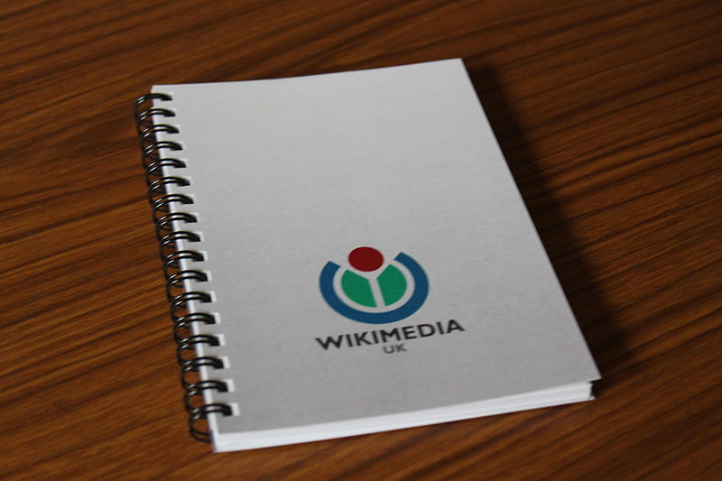
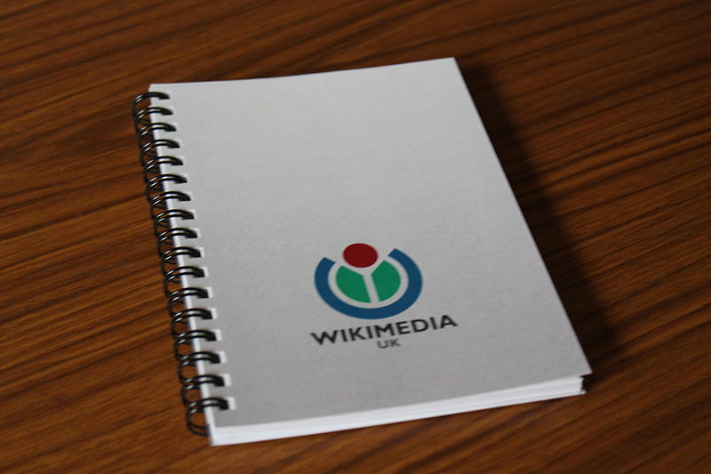

Photo credits:
The Soviet stamp, which links through to email was scanned and processed by A. Sdobnikov (Personal collection) [Public domain], via Wikimedia Commons
The twitter-y blue bird is by Faldrian (Own work) [CC-BY-SA-3.0], via Wikimedia Commons
The Chelsea badge is from the Chelsea website. I'm a member. This doesn't mean that I have the right to the image. But I'm guessing Mr Abramovich won't mind.
The picture of Stonehenge which links to the 'On This Day' list on my wesbite was taken by me at Winter Solstice in 2012, I think
The boy and girl are a detail from the poster for a Salisbury Studio production of Romeo and Juliet.
The Red Lion is a photo from the Inn in Salisbury. I took it
The 'Hob Nob'is from an old postcard which I scanned
The paper.li logo is taken from their website. I'm assuming they won't mind
The RSS icon is by Jessekoeckhoven (Own work) [CC0], via Wikimedia Commons
The Pinboard is a detail from a photo by Sampsonchen (Own work) [CC-BY-SA-3.0], via Wikimedia Commons
The Wikimedia notebook is By Rock drum (Own work) [CC-BY-SA-3.0], via Wikimedia Commons
The picture of Stamford Bridge is also from the Chelsea wbesite
The 'T' for twiki is [GPL, GFDL or CC-BY-SA-3.0], via Wikimedia Commons
The picture of Brian Lara is By Ukexpat (Own work) [GFDL or CC-BY-SA-3.0-2.5-2.0-1.0], via Wikimedia Commons
And the monads psychedlic-looking illustration is By Sednin Nikolai (www.sednin.com) [CC-BY-SA-3.0], via Wikimedia Commons
 
